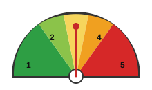

CREATING SOLUTIONS
Use the Measure Community Asset Map to help define preparedness and create your organizational solutions. The community needs assessment focuses on three main categories: people, places, and equitable opportunity. With this data, the CARE Team can create high-level solutions to make positive and sustainable changes in their communities.

- 5 - Outstanding Strength
- 4 - Strength
- 3 - Competent
- 2 - Needs Improvement
- 1 - Needs Significant Improvement
- 0 - Not There At All
| Core Components to Community Resilience | Baseline Score (0-5) | Prioritize High, Medium, Low | Solutions & Suggestions for Improvement/ How to Maintain |
|---|---|---|---|
| Policies and Political Structures | 1.9 | High/ Med | ADVOCATE for and provide better resources and support for those experiencing mental illness. |
| Community Involvement | 3 | High / Med | EDUCATE the community to understand mental illness and its effects, encouraging empathy and creating a stronger family support system. |
| Treatment Programs | 2.5 | High/ Med | SUPPORT families with access to mental health services. |